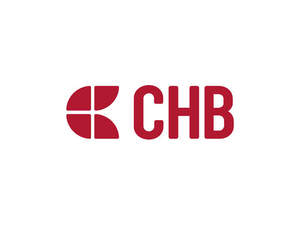

Trade Mark Journal No.2025/031 1 August 2025
UK00004209849 27 May 2025 (6,7,8,35,39)

- Class 6
- Metals; Building materials of metal; Metal hardware; Anchor flanges of metal; Screws of metal; Self-tapping metal screws; Set screws of metal; Thumbscrews [fasteners] of metal; Nuts of metal; Nuts, bolts and fasteners, of metal; Washers of metal; Rods of metal; Threaded bars of metal; Rods of metal for brazing and welding; Binding screws of metal for cables; Zip ties of metal; Metal shackles; Eye bolts; Metal turnbuckles; Wire stretchers [tension links]; Belt stretchers of metal; Stretchers for metal bands [tension links]; Cable thimbles of metal; Metal karabiners; Cotters, made of metal; Rings of metal; Rings of metal; Screw cups of metal; Snap rings [fasteners] of metal; Metal cable wire; Metal fastening anchors [for securing pictures to walls]; Wall plugs of metal.
- Class 7
- Electrodes for welding machines.
- Class 8
- Vices; Cable rods; Tensioners [hand-operated tools]; Metal band stretchers [hand tools]; Marline spikes. .
- Class 35
- Retail services, Wholesale services and Online retail services in relation to metals, Building materials of metal, Metal hardware, Anchor flanges of metal, Screws of metal, Self-tapping metal screws, Set screws of metal, Thumbscrews [fasteners] of metal, Nuts of metal, Nuts, bolts and fasteners of metal, Washers of metal, Rods of metal, Threaded bars of metal, Rods of metal for brazing and welding, Binding screws of metal for cables, Zip ties of metal, Metal shackles, Eye bolts, Metal turnbuckles, Wire stretchers [tension links], Belt stretchers of metal, Stretchers for metal bands [tension links], Cable thimbles of metal, Metal karabiners, Cotters made of metal, Rings of metal, Screw cups of metal, Snap rings [fasteners] of metal, Metal cable wire, Metal fastening anchors [for securing pictures to walls], Wall plugs of metal, Electrodes for welding machines, Vices, Cable rods, Tensioners [hand-operated tools], Metal band stretchers [hand tools], Marline spikes.
- Class 39
- Transportation and storage; Packaging services; Labelling services; Palletised freight distribution services; Distribution services.
CHAVES BILBAO, S.L.
Representative: Pure Ideas Limited